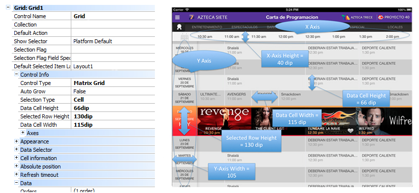
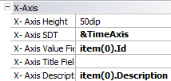
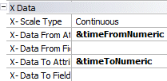
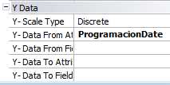

HowTo: Using Matrix Grid Control
Sometimes you want to display information in two-dimensions on a single screen. For example: to list a Dentist's patients per hour/day, to show the programming of a television channel, among others. But the creation of this type of interfaces, with horizontal and vertical scroll, is too complicated, so you often find this idea implemented by a series of steps completely unnecessary. You can resolve this problem using the Matrix Grid Control to display data in two-dimensional grids.

How is it used?
The Matrix Grid Control is a type of Grid control. To use it, you just need to insert a Grid on your screen and set the Control Type property to Matrix Grid.
The Matrix Grid Control defines a set of custom properties to determine the data to be shown and to control its appearance. Three important things have to be established: the X-axis, the Y-axis, and the data - each data has its X and Y position attached.
Also note that being it a Grid, some behavior is inherited from the Grid control, like:
- The data items in the Matrix Grid are drawn by taking into account the item layout defined in the Grid (in the Layout editor in GeneXus).
- The Grid's Default Action is also available and works as expected, that is, when tapping on an item in the Matrix Grid, the Default Action will be executed for that item.
Components
This type of Grids is composed of three elements:
- The X-Axis
- The Y-Axis
- The Data -Each data element indicates it's X and Y position.
For each of these three items is important to determine:
- Size
- Aspect
- Data
And this has to be done using the following properties.
General Properties
This set of properties determines the size of each data grid cell.
| Property | Description |
|---|---|
| Selection Type | Defines the behavior of the Grid's rows when they are selected. |
| Data Cell Height | Sets the height of the Matrix Grid data cells. |
| Selected Row Height | Sets the "selected" row height of a Matrix Grid. |
| Data Cell Width | Sets the width of the Matrix Grid data cells. |

Section Axes Properties
X-Axis — refers to the values on the horizontal axis.

| Property | Description |
|---|---|
| X-Axis Width | The width of the X-axis row. |
| X-Axis SDT | The SDT which contains the values for the X-axis. |
| X-Axis Value Field Specifier | The SDT's item with the value to use as an identifier. |
| X-Axis Title Field Specifier | The SDT's item with the title to use. |
| X-Axis Description Field Specifier | The SDT's item with the description to use. |
Example
Loading X-Axis, hours a day every 30 minutes. This is the load of the SDT &TimeAxis. &TimeAxis is assigned to the X-Axis SDT property.
// Load Time Axis
&TimeAxis = new()
&vTime = YMDHMStoT(&DayReference.Year(),&DayReference.Month(),&DayReference.Day(),0,0,0)
for &i=1 to 60 * 24 step 30 // 24 hours to minutes
&TimeAxisItem = new ()
&TimeAxisItem.Id = &vTime.Hour() * 60 + &vTime.Minute()
// 24 to 12 hs conversion
&m = iif(&vTime.Hour() >= 12, "pm", "am")
&vTimeHour = iif(&vTime.Hour() >= 12, &vTime.Hour() - 12 , &vTime.Hour())
&vTimeHour = iif(&vTimeHour = 0, 12, &vTimeHour)
&TimeAxisItem.Description = format("%1:%2 %3", &vTimeHour, trim(iif(&vTime.Minute()=0,"00",&vTime.Minute().ToString())), &m)
&TimeAxis.Add(&TimeAxisItem)
&vTime = &vTime.AddMinutes(30)
endfor
Using a Data Provider:
TimeAxis
{
&vTime = YMDHMStoT(&DayReference.Year(),&DayReference.Month(),&DayReference.Day(),0,0,0)
TimeAxisItem input &i = 1 to 60 * 24 step 30 // 24 hours to minutes
{
Id = &vTime.Hour() * 60 + &vTime.Minute()
// 24 to 12 hs conversion
&m = iif(&vTime.Hour() >= 12, "pm", "am")
&vTimeHour = iif(&vTime.Hour() >= 12, &vTime.Hour() - 12 , &vTime.Hour())
&vTimeHour = iif(&vTimeHour = 0, 12, &vTimeHour)
Description = format("%1:%2 %3", &vTimeHour, trim(iif(&vTime.Minute()=0,"00",&vTime.Minute().ToString())), &m)
}
&vTime = &vTime.AddMinutes(30)
}
| Property | Description |
|---|---|
| Y-Axis Height | The height of the Y-axis column. |
| Y-Axis SDT | The SDT which contains the values for the Y-axis. |
| Y-Axis Value Field Specifier | The SDT's item with the value to use as an identifier. |
| Y-Axis Title Field Specifier | The SDT's item with the title to use. |
| Y-Axis Description Field Specifier | The SDT's item with the description to use. |
| Y-Axis Selection Flag Field Specifier | The SDT's item that indicates if the row is selected or not. |
Example
Loading Y-Axis, days of the week -2 weeks.
The row corresponding with the current data is marked as selected and the "Today" subtitle is added.
// Load Day Axis
&DayAxis = new()
&FirstDayOfWeek = today()
&varFirstDayOfWeek =ymdhmstot(&FirstDayOfWeek.Year(),&FirstDayOfWeek.Month(),&FirstDayOfWeek.Day(),0,0,0)
&varFirstDayOfWeekD =ymdtod(&FirstDayOfWeek.Year(),&FirstDayOfWeek.Month(),&FirstDayOfWeek.Day())
for &i = 0 to 13// 7 days of week based on reference day
&DayAxisItem = new()
&DayAxisItem.Id = &FirstDayOfWeek.AddDays(&i)
&DayAxisItem.Title = upper(&DayAxisItem.Id.DayOfWeekName())
&DayAxisItem.Title += format("%1%2 DE %3", newline(), &DayAxisItem.Id.Day(), upper(&DayAxisItem.Id.MonthName()))
&DayAxisItem.Selected = iif(&DayAxisItem.Id = Today(), TRUE, FALSE)
if (&DayAxisItem.Selected)
&DayAxisItem.Subtitle = "Today"
endif
&DayAxis.Add(&DayAxisItem)
endfor
Using a Data Provider:
DayAxis
{
&FirstDayOfWeek = today()
&varFirstDayOfWeek = ymdhmstot(&FirstDayOfWeek.Year(),&FirstDayOfWeek.Month(),&FirstDayOfWeek.Day(),0,0,0)
&varFirstDayOfWeekD = ymdtod(&FirstDayOfWeek.Year(),&FirstDayOfWeek.Month(),&FirstDayOfWeek.Day())
DayAxisItem input &i = 0 to 13// 7 days of week based on reference day
{
Id = &FirstDayOfWeek.AddDays(&i)
&Title = upper(&DayAxisItem.Id.DayOfWeekName())
&Title = &Title + format("%1%2 DE %3", newline(), &DayAxisItem.Id.Day(), upper(&DayAxisItem.Id.MonthName()))
Title = &Title
&Selected = iif(&DayAxisItem.Id = Today(), TRUE, FALSE)
Selected = &Selected
Subtitle = iif(&Selected, "Today", "")
}
}

| Property | Description |
|---|---|
| X-Data From Attribute | Attribute or variable — with the value of one identifier defined on the X-Axis Value Field Specifier — which indicates the starting position. |
| X-Data From Field Specifier | Sets the member name of the SDT (with the value of one identifier defined on the X-Axis Value Field Specifier) which indicates the starting position. |
| X-Data To Attribute | Attribute or variable —with the value of the identifier defined on the X-Axis Value Field Specifier — which indicates the final position. |
| X-Data To Field Specifier | Sets the member name of the SDT (with the value of one identifier defined on the X-Axis Value Field Specifier) which indicates the final position. |
Y-Axis Data — refers to the position of the data on the vertical axis.

| Property | Description |
|---|---|
| Y-Data From Attribute | Attribute or variable — with the value of the identifier defined on the Y-Axis Value Field Specifier — which indicates the starting position. |
| Y-Data From Field Specifier | Sets the member name of the SDT (with the value of the identifier defined on the Y-Axis Value Field Specifier) which indicates the starting position. |
| Y-Data To Attribute | Attribute or variable — with the value of the identifier defined on the Y-Axis Value Field Specifier — which indicates the final position. |
Example
In the load event of the grid load values for each cell specifying the X, Y where the data should be placed:
Value X= &TimeFromNumeric (Start Time) y &TimeToNumeric (End Time)
Value Y= CartaProgramacionFecha
Event Grid1.Load &timeFromNumeric = val(CartaProg_Hora_Inicio.Substring(1,2)) * 60 + val(CartaProg_Hora_Inicio.Substring(4,2)) &timeToNumeric = val(CartaProg_Hora_Fin.Substring(1,2)) * 60 + val(CartaProg_Hora_Fin.Substring(4,2)) EndEvent
Example
Here is another load sample without base table:
Event Grid1.Load &XAxisfrom = <XAxis position to start showing data> &XAxisto = <XAxis position where data finishes> &YAxisfrom = <YAxis position to start showing data> &YAxisto = <YAxis position where data finishes> &DataToShow = <Value showed in grid position (x,y)> load &XAxisfrom = <XAxis position to start showing data> &XAxis = <XAxis position where data finishes> &YAxisfrom =<YAxis position to start showing data> &YAxis = <YAxis position where data finishes> &DataToShow = <Value2 showed in grid position (x2,y2)> load Endevent
This is an example of loading two values. You can load as many values as you need.
Appearance
See the Matrix theme-class for Smart Devices for more information.